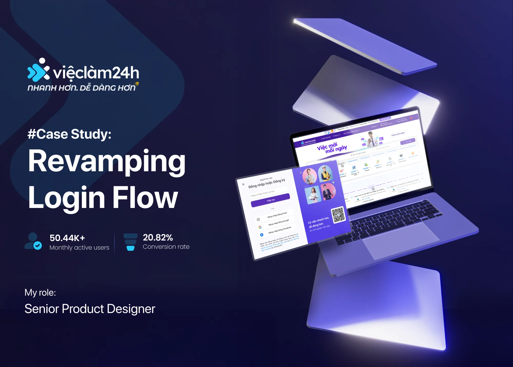
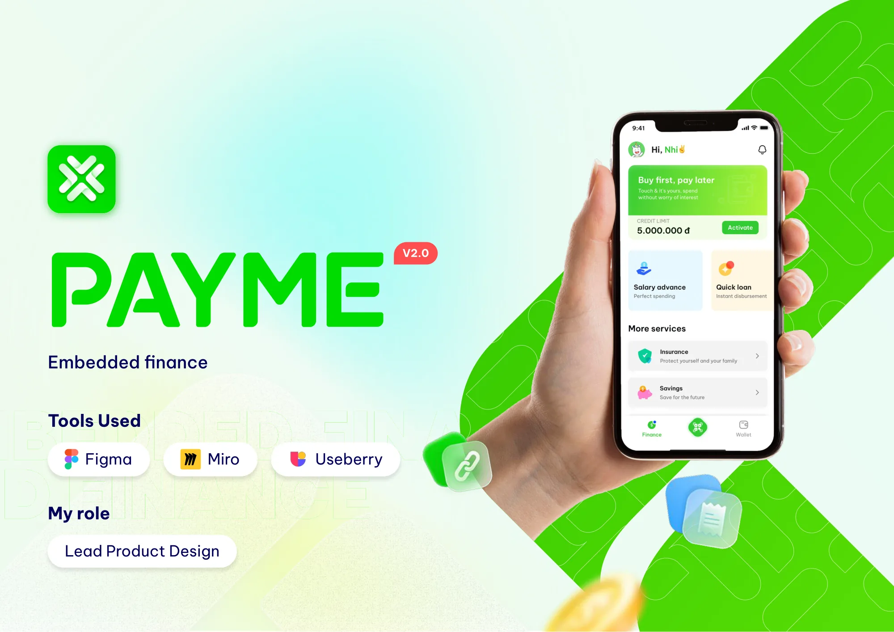

I turn complex problems into simple products.
10 years designing AI, SaaS, fintech and healthcare products. I design with data, balance user needs with business goals, and prototype in real code with AI.
fewer support tickets after redesigning TrueProfit’s cost settings
setup time, cut nearly in half for 4.8K monthly merchants
successful logins in one month on vieclam24h.vn
shipping products, including leading a design team of 6
What you get
Four things I do better than most.
-
01
Complex in, simple out.Untangle systems so users don’t have to.
I map every edge case first, then cut the model down until the common path takes one decision. At TrueProfit, shipping-cost setup had four overlapping paths. I rebuilt it location-first, so most merchants finish without touching a product list.
4setup paths18steps across all paths -
02
Data-driven, not data-decorated.Evidence decides what ships.
I start with funnels, heatmaps and session recordings in Mixpanel, Clarity and Hotjar. Then I test with real users and measure after launch. On vieclam24h.vn, a revamped login flow lifted successful logins and job applications within a month.
-
03
User need × business need.Good design pays for itself.
Every screen I design has to earn trust for users and move a number for the business. In PayME’s salary advance flow with CIMB bank, testing showed users couldn’t judge how much to borrow. I added preset amounts and showed the fee on the same screen, inside the bank’s process rules.
At TrueProfit, the same redesign cut support costs and raised free-to-paid conversion by 5%.
-
04
A designer who ships code.AI turns my ideas into working software.
I use Claude, Codex and Gemini to go from idea to a working prototype in days, not sprints. At Optimizely I built Research OS, an AI-assisted research workflow. I coded the MVP myself to validate it with product teams before asking engineering for anything.
This website was designed and coded the same way.
Selected work
Proof, not promises.
Four case studies across SaaS, job platforms, fintech and healthcare. Each one starts with a messy problem and ends with something people could use.
-
 01
TrueProfitRedesigning shipping and COGS settings for a profit analytics app on Shopify.
−83%support tickets
01
TrueProfitRedesigning shipping and COGS settings for a profit analytics app on Shopify.
−83%support tickets
-

02 Vieclam24hRevamping the login flow for a job platform with 50K monthly users. +8.4%successful logins -

03 PayMELeading the design of an embedded finance e-wallet with bank partners. 6designers led - 04 BewellTurning a telehealth app into a family doctor service for caregivers. 20caregiver interviews
Right now
Designing how teams govern AI.
OptimizelySenior Product Designer, Platform · Oct 2025 to present
-
Opal Credits
Set the phased V1 direction for AI credit visibility, allocation and alerts. I framed a vague, cross-team billing problem around one thing: the admin’s job to be done.
-
Admin Center
Led design across user management, Virtual Teammates, permissions, and usage and billing. I turned separate feature requests into one coherent platform.
-
Research OS
Built an AI-assisted research workflow covering the brief, method selection and synthesis. I coded a working MVP to validate the process with product teams.
This work is under NDA. I’m happy to walk through it in a conversation.
Track record
10 years, 5 industries.
Product design
- Enterprise platforms
- Interaction design
- Information architecture
- Design systems
- Prototyping
Research and analytics
- User interviews
- Usability testing
- Mixpanel
- Clarity
- Hotjar
AI and technical
- AI-assisted prototyping
- Claude
- Codex
- Opal / Gemini
- HTML / CSS
- BPMN
- 2025 to nowOptimizely · AI platformSenior Product Designer
- 2024 to 2025SieuViet Group · vieclam24h.vnSenior Product Designer
- 2023 to 2024Firegroup · TrueProfitSenior Product Designer
- 2022 to 2023PayME · E-walletLead Designer
- 2021 to 2022Zoop Care · BewellUX Designer
- 2021MoMo · Vietnam’s #1 e-walletProduct Owner
- 2016 to 2021Teqnological Asia, Acexis · Internal tools, healthcareUI/UX Designer
Contact